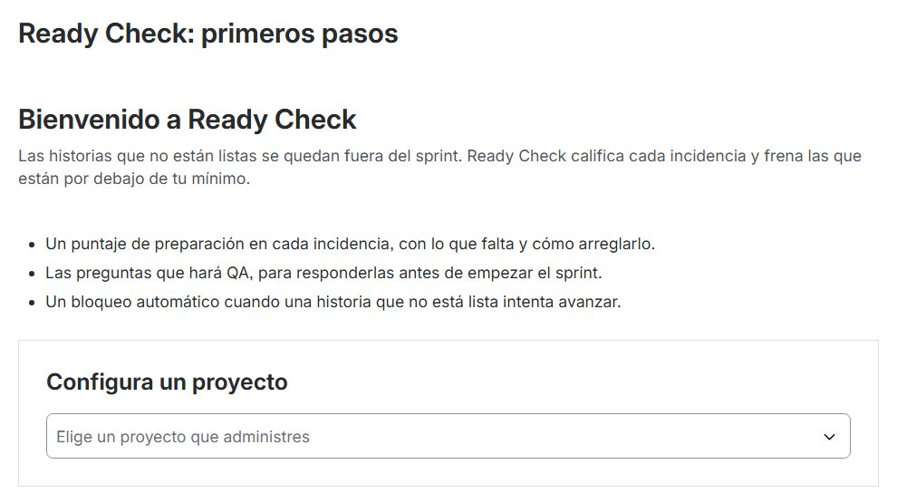
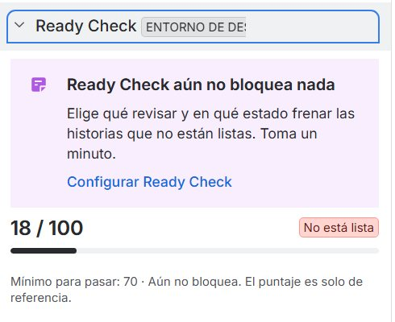
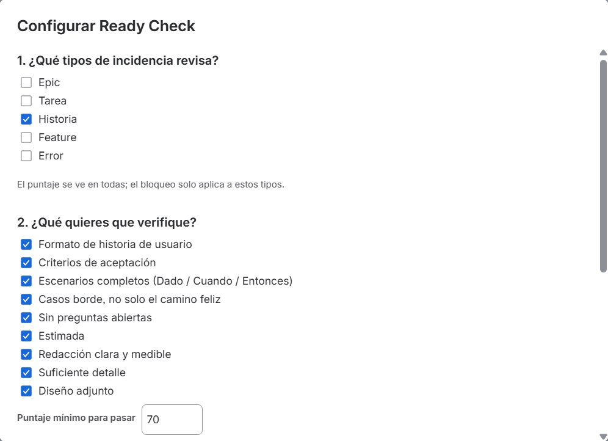
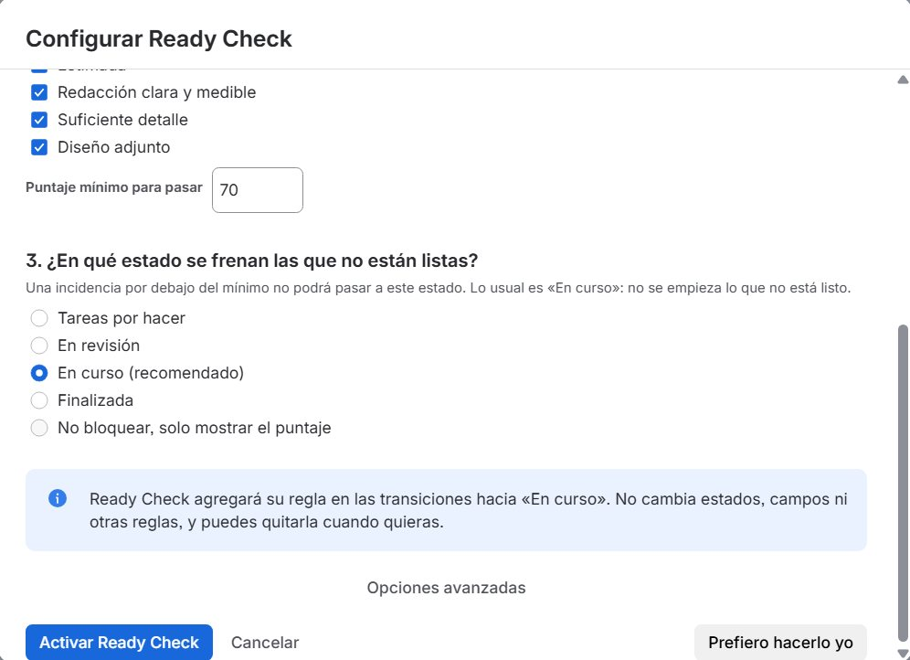
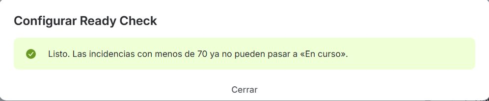
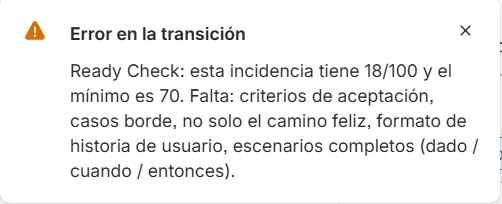
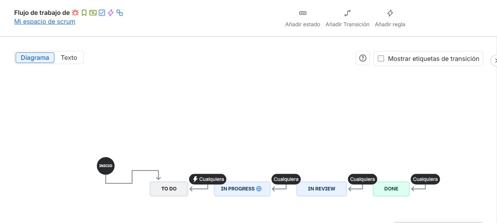
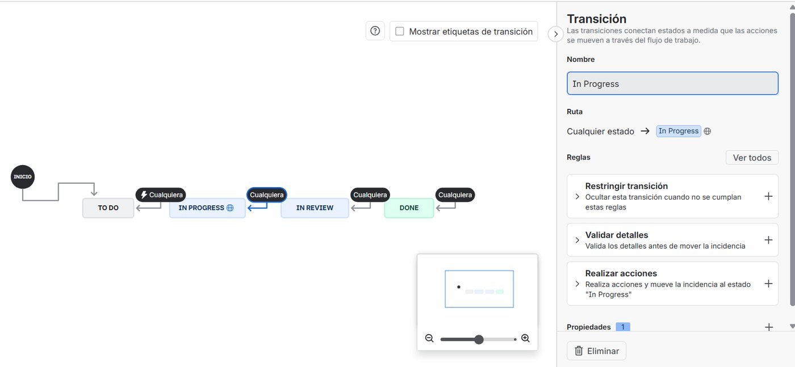
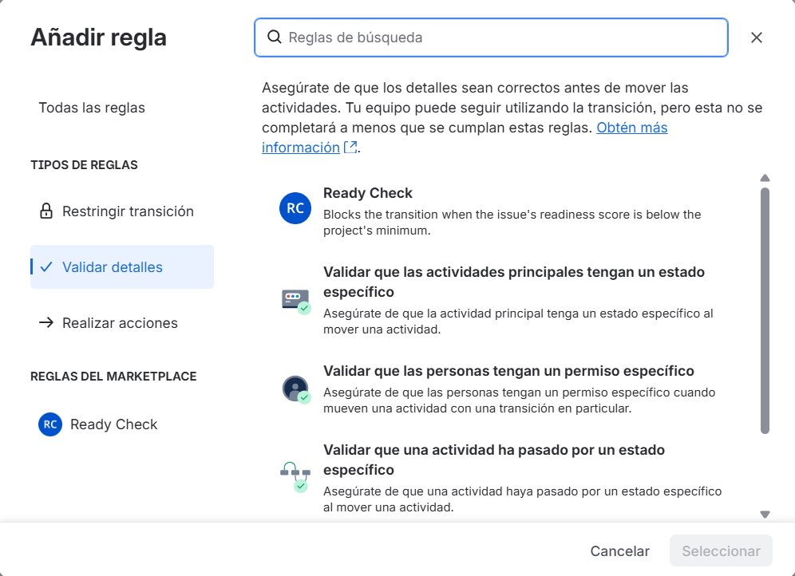
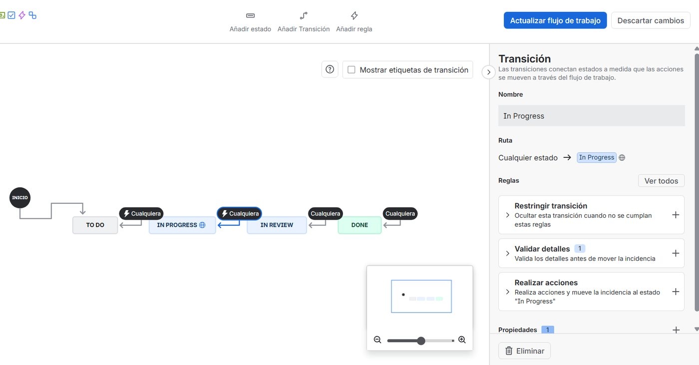

Que ninguna historia empiece sin estar lista
No story starts before it is ready
Ready Check califica cada incidencia de 0 a 100 según su definición de listo y frena en el flujo de Jira las que están por debajo de tu mínimo. Esta guía te deja funcionando en un minuto.
Ready Check scores every issue from 0 to 100 against your definition of ready and stops the ones below your minimum right in the Jira workflow. This guide gets you running in a minute.
Dónde conviene bloquear
Where to block
El bloqueo va en la entrada a En curso. Es el momento en que alguien se compromete a construir la historia: si no está lista, que no empiece.
The block belongs on the way into In Progress. That is when someone commits to building the story: if it is not ready, it does not start.
El asistente lee los estados de tu proyecto y te sugiere el primero de la categoría «en curso», se llame como se llame.
The setup reads your project's statuses and suggests the first one in the "in progress" category, whatever it is called.
Configúralo en un minuto
Set it up in a minute
Solo lo puede hacer un administrador del proyecto. Nadie tiene que entrar al editor de flujos.
A project admin does this once. Nobody has to open the workflow editor.
Abre el asistente
Open the setup
Justo después de instalar, Jira muestra el enlace Comenzar de Ready Check. También aparece un aviso en el panel de Ready Check de cualquier historia mientras el proyecto no esté configurado.
Right after installing, Jira shows Ready Check's Get started link. A notice also appears in the Ready Check panel of any story until the project is set up.


Elige tipos y revisiones
Choose issue types and checks
Historia viene marcada y las nueve revisiones vienen prendidas. El puntaje se ve en todas las incidencias, pero el bloqueo solo aplica a los tipos que marques. Así los errores y las subtareas no se frenan.
Story comes checked and all nine checks are on. The score shows on every issue, but the block only applies to the types you check, so bugs and subtasks are never stopped.

Elige dónde frenar y activa
Choose where to stop and activate
Antes de aplicar, el asistente te dice exactamente qué va a cambiar. Al dar Activar Ready Check, la app agrega su regla en todas las transiciones hacia ese estado y la quita de cualquier otra.
Before applying, the setup tells you exactly what will change. When you click Activate Ready Check, the app adds its rule to every transition into that status and removes it from anywhere else.


Así se ve un bloqueo
What a block looks like
Si alguien mueve una historia por debajo del mínimo, Jira la frena y dice qué le falta, en el idioma de esa persona.
If someone moves a story below the minimum, Jira stops it and says what is missing, in that person's language.

Botón Configurar en el panel de Ready Check (solo lo ven los administradores) o Configuración del proyecto → Ready Check. Si cambias el estado, la app mueve la regla sola; «No bloquear» la quita.
Set up button in the Ready Check panel (admins only) or Project settings → Ready Check. If you change the status, the app moves the rule for you; "Do not block" removes it.
Qué revisa y cómo calcula el puntaje
What it checks and how the score works
Lee el resumen, la descripción, el campo de criterios de aceptación (si tu proyecto usa uno), los story points y los adjuntos. Funciona en español y en inglés. Cada revisión tiene un peso que puedes cambiar en «Opciones avanzadas».
It reads the summary, description, acceptance criteria field (if your project uses one), story points and attachments. It works in English and Spanish. Each check has a weight you can change under "Advanced options".
| Revisión | Check | Pasa si… | Passes when… | Peso | Weight |
|---|---|---|---|---|---|
| Criterios de aceptación | Acceptance criteria | Hay escenarios Dado/Cuando/Entonces o una sección de criterios con contenido | There are Given/When/Then scenarios or a criteria section with content | 3 | |
| Casos borde | Edge cases | Al menos dos casos y uno negativo: error, vacío, inválido, vencido, sin permiso | At least two cases and one negative: error, empty, invalid, expired, no permission | 3 | |
| Formato de historia | Story format | «Como… quiero… para…» | "As a… I want… so that…" | 2 | |
| Escenarios completos | Complete scenarios | Cada escenario tiene Dado, Cuando y Entonces | Every scenario has Given, When and Then | 2 | |
| Sin preguntas abiertas | No open questions | No aparece «TBD», «por definir», «pendiente de confirmar», «??» | No "TBD", "to be defined", "to be confirmed", "??" | 2 | |
| Estimada | Estimated | Story points mayores a 0. Si el sitio no tiene ese campo, no cuenta | Story points above 0. Skipped if the site has no such field | 2 | |
| Redacción clara | Clear wording | Sin palabras vagas: «rápido», «intuitivo», «amigable», «etc.» | No vague words: "fast", "intuitive", "user-friendly", "etc." | 1 | |
| Suficiente detalle | Enough detail | La descripción tiene al menos 30 palabras (ajustable) | The description has at least 30 words (adjustable) | 1 | |
| Diseño adjunto | Design attached | Un enlace de Figma, Miro u otra herramienta de diseño, o una imagen adjunta | A Figma, Miro or similar link, or an attached image | 1 |
Puntaje = puntos de las revisiones que pasan ÷ puntos posibles × 100. El mínimo por defecto es 70. Ejemplo: una historia que solo pasa «sin preguntas abiertas» y «redacción clara» suma 3 de 17 puntos y saca 18.
Score = points of the checks that pass ÷ possible points × 100. The default minimum is 70. Example: a story that only passes "no open questions" and "clear wording" earns 3 of 17 points and scores 18.
El panel también muestra las preguntas que hará QA según el tema de la historia (si habla de pagos: ¿qué pasa si la tarjeta es rechazada?). No restan puntos: ayudan a escribir mejores criterios.
The panel also lists the questions QA will ask based on the story's topic (if it mentions payments: what if the card is declined?). They do not lower the score; they help write better criteria.
Permisos y tus datos
Permissions and your data
Solo para agregar o quitar la regla de Ready Check en el flujo del proyecto que configuras. No cambiamos estados, campos, pantallas ni otras reglas. Cada cambio se hace con los permisos de quien da clic: si esa persona no puede editar el flujo, Jira no lo permite y el asistente le muestra cómo hacerlo a mano.
Only to add or remove the Ready Check rule in the workflow of the project you set up. We do not change statuses, fields, screens or other rules. Every change runs with the permissions of whoever clicks: if that person cannot edit the workflow, Jira refuses and the setup shows how to do it by hand.
Ready Check corre completo dentro de la plataforma de Atlassian (Forge) y no envía información a servidores externos. La configuración se guarda en el almacenamiento de la app dentro de tu sitio.
Ready Check runs entirely on Atlassian's platform (Forge) and sends nothing to outside servers. Settings are stored in the app's storage inside your site.
Plan B: agregar la regla a mano
Plan B: add the rule by hand
Solo si prefieres no usar el asistente, o si tu usuario no puede editar el flujo. Primero guarda la configuración con el asistente eligiendo «No bloquear»: sin eso, Ready Check no frena nada.
Only if you prefer not to use the setup, or your user cannot edit the workflow. First save the setup choosing "Do not block": without it, Ready Check stops nothing.
Ve a Configuración del proyecto → Tipos de incidencia → Historia → Editar flujo de trabajo (en proyectos gestionados por la empresa: Configuración del proyecto → Flujos de trabajo).
Go to Project settings → Issue types → Story → Edit workflow (company-managed projects: Project settings → Workflows).

Haz clic en la transición que llega a En curso y, en Validar detalles, pulsa +.
Click the transition into In Progress and press + next to Validate details.

Elige Ready Check, confirma con Añadir y guarda con Actualizar flujo de trabajo.
Choose Ready Check, confirm with Add and save with Update workflow.


Preguntas frecuentes
FAQ
No veo el aviso para configurar
I do not see the setup notice
El panel de Ready Check puede estar contraído en la barra derecha de la incidencia: haz clic en su título. También puedes entrar por la página «Comenzar» o por Configuración del proyecto → Ready Check.
The Ready Check panel may be collapsed on the right side of the issue: click its title. You can also use the "Get started" page or Project settings → Ready Check.
¿Va a bloquear errores o subtareas?
Will it block bugs or subtasks?
No, salvo que los marques en el paso 1. El puntaje se muestra en todas las incidencias, pero el bloqueo solo aplica a los tipos elegidos.
No, unless you check them in step 1. The score shows on every issue, but the block only applies to the chosen types.
Mi flujo se comparte con otros proyectos
My workflow is shared with other projects
Ready Check solo bloquea en los proyectos que pasaron por el asistente. Los demás proyectos que usan el mismo flujo siguen igual.
Ready Check only blocks in projects that went through the setup. Other projects using the same workflow are unaffected.
Jira está en otro idioma
Jira is in another language
Los tipos de incidencia se guardan por su código interno, así que el bloqueo funciona igual en cualquier idioma. Los mensajes salen en el idioma de cada persona (español o inglés), o en el que fijes en «Opciones avanzadas».
Issue types are stored by their internal id, so the block works the same in any language. Messages follow each person's language (English or Spanish), or the one you set under "Advanced options".
¿Cómo lo desactivo?
How do I turn it off?
Abre el asistente y elige «No bloquear, solo mostrar el puntaje». La app quita su regla del flujo.
Open the setup and choose "Do not block, only show the score". The app removes its rule from the workflow.